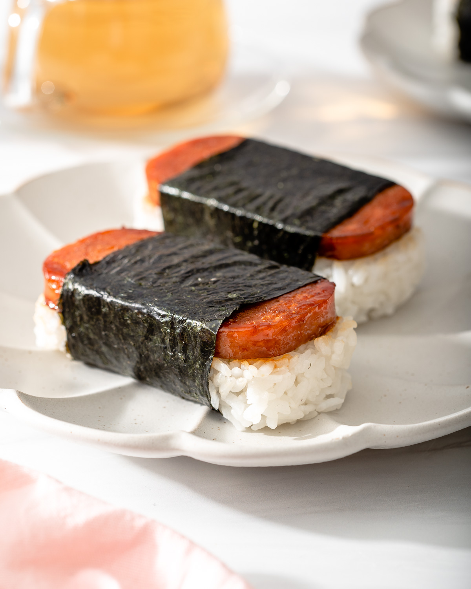

Spam Musubi

Description
Spam musubi is a popular Hawaiian snack or appetizer made with a slice of grilled or pan-fried Spam (a canned meat product), placed on top of a block of sushi rice, and wrapped together with a strip of nori seaweed. It's a savory and portable dish often enjoyed for its combination of salty, umami flavors and contrasting textures. Spam musubi is a beloved local favorite and a fusion of Japanese and American culinary influences.
Ingredients
- Spam: Slices of canned Spam, which is a canned meat product.
- Sushi Rice: Seasoned sushi rice, made with rice vinegar, sugar, and salt.
- Nori Seaweed: Sheets of dried nori seaweed, usually roasted.
- Soy Sauce (optional): Some variations may include a drizzle of soy sauce for added flavor.
Additional variations of spam musubi may include ingredients like teriyaki sauce, furikake (a Japanese seasoning blend), or even additions like avocado or pickled vegetables for added flavor and texture.
Recipe
- Prepare the sushi rice:
- Rinse the rice in cold water until the water runs clear.
- Cook the rice according to the package instructions.
- While the rice is still hot, mix in the rice vinegar, sugar, and salt. Let it cool to room temperature.
- Slice the spam:
- Cut the Spam into 1/4-inch thick slices.
- Fry the Spam:
- In a non-stick skillet over medium-high heat, cook the Spam slices until they are lightly browned on both sides. You can add a bit of soy sauce or teriyaki sauce for extra flavor if you like. Remove the cooked Spam from the pan and let it cool.
- Prepare the musubi mold (optional):
- If you have a musubi mold, it can help shape your spam musubi neatly. If not, you can use clean hands to shape them.
- Assemble the spam musubi:
- Place a sheet of plastic wrap on a clean surface or use your musubi mold.
- Lay a sheet of nori seaweed on top.
- Wet your hands slightly and grab a handful of seasoned sushi rice. Press it firmly into the mold or onto the nori sheet, creating a compact rice layer.
- Place a slice of cooked Spam on top of the rice.
- Wrap the musubi:
- If using a musubi mold, press it down to shape the musubi.
- If not using a mold, simply fold the nori over the rice and Spam, sealing the edges with a little water to make it stick.
- Repeat the process for the remaining ingredients.
- Cut and serve:
- Use a sharp knife to slice each assembled musubi into bite-sized pieces. You can cut them in half or into smaller sections, depending on your preference.
- Serve your spam musubi with soy sauce for dipping if desired, and enjoy!
This basic recipe can be customized with additional ingredients or seasonings to suit your taste. Some people like to sprinkle furikake seasoning on top of the rice or drizzle teriyaki sauce over the Spam for added flavor.